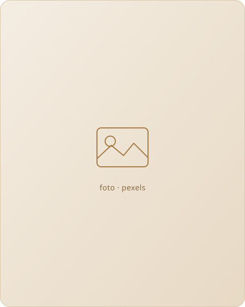
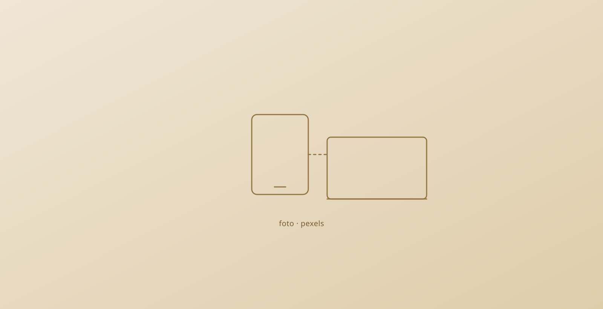

Local-first
Seus dados moram no aparelho. O app funciona por completo mesmo sem internet nenhuma.
Hoje
Segunda-feira
Sem prazo pra decidir nada antes de escrever. Prazo, prioridade e repetição entram no próprio texto, se você quiser.

Qual lista, qual projeto, qual prioridade, se cadastra ou entra com o Google primeiro. É por isso que a maioria para de ser usada em poucas semanas: capturar deveria levar cinco segundos, não um formulário.
O Taskmate resolve isso invertendo a ordem: primeiro você escreve, a organização acontece depois, quando você tiver tempo pra ela.
Ideia para o cliente X
Clique aqui para escrever. Negrito, itálico, sublinhado, títulos e marcadores. Só isso, de propósito.
Notas de verdade, para o que não é tarefa. Sem lista nem grupo obrigatório.
Seus dados moram no aparelho. O app funciona por completo mesmo sem internet nenhuma.
Nenhum cadastro, nenhuma senha, nenhum e-mail pedido antes de escrever a primeira tarefa.
Sincronizar entre dispositivos é opcional, por um único arquivo no seu próprio Drive. Sem servidor nosso.
Todo o código é público. Qualquer pessoa pode ler, copiar ou contribuir.
Um PWA de verdade: instala como app, funciona offline, sem loja de aplicativos no meio.
Cinco jeitos de dizer a mesma coisa: os dados são seus.

Verificado, não prometido
cenários de sincronização entre dois dispositivos, testados a cada mudança no código, não só torcendo para funcionar.
Um CRDT (Automerge) faz o merge, não a última escrita que chegou por último. Duas pessoas editando offline convergem sem perder nada de nenhum lado.